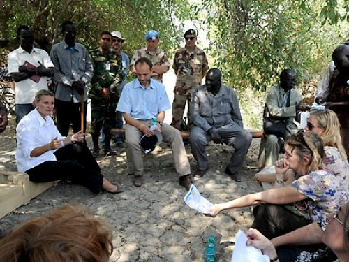
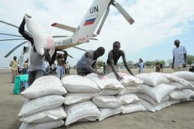
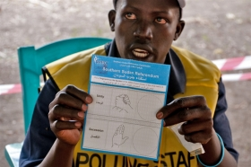

The HC Interview: South Sudan
30 Mar 2012

Resident and Humanitarian Coordinator Lise Grande with Norwegian Deputy Ministry for Foreign Affairs Torgeir Lasen in Pibor County, Jonglei State, South Sudan. Credit: UNMISS
Resident and Humanitarian Coordinator calls for urgent funding to respond immediately to the “worrying” humanitarian situation in the world’s youngest country.
South Sudan is not only the world’s youngest country, but also one of its poorest and least developed. More than half of its population does not have enough to eat, and over 1 million South Sudanese are severely food insecure.
Since its independence from Sudan in July 2011, inter-communal violence in parts of South Sudan has exacerbated the situation, leaving hundreds of thousands of people in need of basic life-saving aid. In Jonglei State, fighting has caused widespread displacement in recent months. Millions of southerners, who are returning home from Sudan to help rebuild their country, need urgent assistance to cope with the lack of infrastructure and resources.
To respond to the deteriorating humanitarian conditions, agencies have appealed for US$776 million to carry out more than 271 projects through 110 organizations in South Sudan in 2012. So far, only 28 per cent of the funding has been received. The Resident and Humanitarian Coordinator for South Sudan, Lise Grande, reiterates her urgent call for funding.
Q. What is the humanitarian situation in South Sudan today?
A. The situation is very worrying. In fact, you could characterize it as near catastrophe. At the moment, 4.7 million people in a country of 9 million require food assistance. Hundreds of thousands of people who have been displaced had to flee their homes and run for their safety. Also, there are many southerners living in Sudan who expect to come home in just a few weeks. They will need assistance when they return to their homes. So taken altogether, it’s a huge humanitarian operation and a difficult situation.
Q. South Sudan declared independence from Sudan last year after years of civil war. Why are things still difficult for the people there?
A. South Sudan has some of the worst social and human development indicators in the world. More than 90 per cent of women can’t read or write. A 15-year-old girl has a higher chance of dying from pregnancy-related causes than finishing school. Out of the world’s 13 deadly diseases, 12 of them are in South Sudan. In fact, the highest maternal mortality rate anywhere in the world is in South Sudan. That’s the legacy of years and years of conflict and marginalization.

Q. What is the returnee situation for South Sudan?
A. When the new State was created in July 2011, already more than 2 million people had come back into South Sudan. In addition, right before the referendum for independence in early 2011, there was a mass influx of 300,000 people who had come back, all in just a few weeks. You add it all up and you will see that probably close to 20 per cent of the country’s population had returned in the last few years. Now the problem is that people are returning to communities that don’t have infrastructure—many places don’t have schools or health clinics, and there aren’t any jobs or livelihoods.
Eighty per cent of the 300,000 people who returned right before the referendum still don’t have any means of livelihood. They have come back to rebuild their country, but they have come back to a place where there is very little on the ground.
Q. How is the UN trying to help and what are the most urgent needs?
A. The UN’s presence in South Sudan is one of its largest in Africa. In addition to the UN peacekeeping mission (UNMISS), there are 23 agencies, funds and programmes providing humanitarian assistance. They also provide a lot of support in state-building, peacebuilding and development. Altogether, the UN accounts for about $2 billion worth of assistance just in South Sudan. It’s a massive presence.
Q. The UN made an urgent appeal for more funds this year. What is the status of that appeal and how much more money is needed?
In South Sudan, humanitarian agencies appealed for $776 million—we pulled that appeal together in December. Well, it was already clear in January that we needed to have that funding early and we needed a lot of it. So we reprioritized the needs and we told donors that what we need most is funding for food. If half the population needs food, that has to be the top priority.
We also appealed for funding to help the returnees: the people from the South who have been living in the north during the war, but now want to come home and rebuild their country. That costs money and we need assistance to help them return in dignity and restart their lives. And, of course, we also have more than 100,000 refugees. These are people who have been in the north and, because of the fighting, they have crossed the border there into South Sudan. They are refugees and we also need to support them.
We basically need $250 million to $300 million in the next six weeks just to support key programmes. And for the year as a whole, we need close to $800 million. That’s a lot of money in the current time and context, but since this is the world’s newest country, we have a lot of confidence that the international community will come together and make those resources available.
More>> Humanitarian Situation in South Sudan - 2012 Humanitarian Appeal - UN Radio Interview with Lise Grande

{kind=link}
{kind=link}
{kind=link}